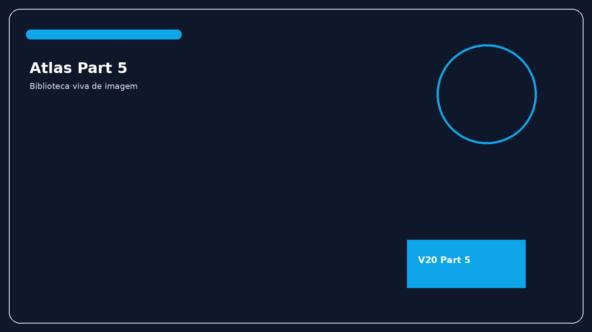

Part 5Plano boost
Confirmar nao e olhar uma ponta bonita
US, RX, artefato, trajeto, malposicao e bundle de confirmacao existem para impedir que a tela vire supersticao confortavel.
trajectory matterstip is not enoughhumble reading
US, RX, artefato, trajeto, malposicao e bundle de confirmacao existem para impedir que a tela vire supersticao confortavel.
Confirmacao madura pergunta por onde a linha entrou, por onde caminhou, onde terminou e se isso conversa com o quadro clinico e com a infusao.
Pode ainda assim estar mal posicionada, trombosando ou cobrando risco silencioso.
Sem leitura de trajeto e contexto, uma ponta "bonita" ainda pode contar meia historia.
Junta imagem, clinica, trajeto e plano de manutencao em um unico raciocinio.

Treine lendo toda imagem em tres camadas: entrada, trajeto e termino. Depois confronte isso com a pergunta clinica original.
Uma vez que a linha existe e foi interpretada, a serie precisa encarar o que acontece quando mecanica, radiologia ou biologia cobram a conta.